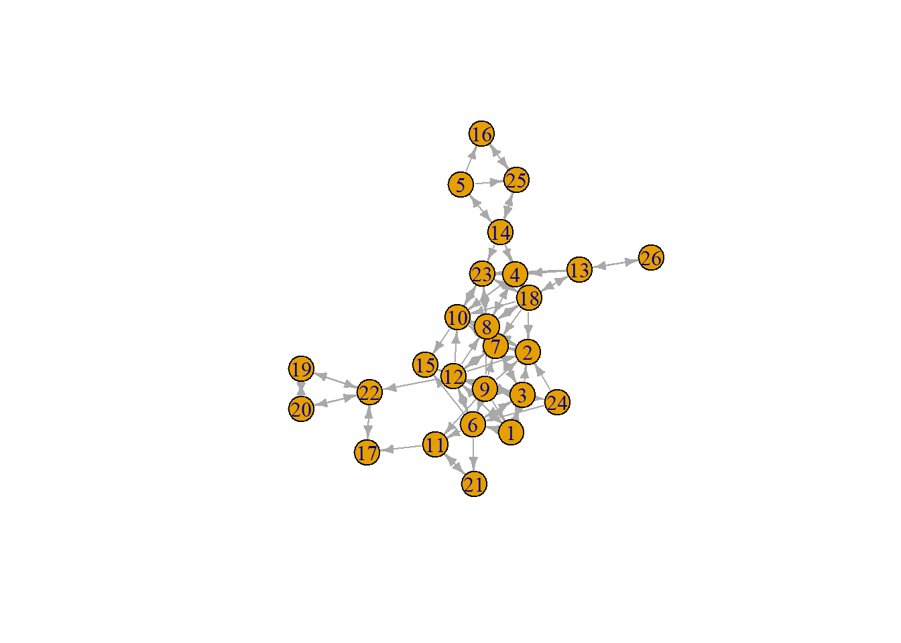

7 Solutions to Tutorial 3
7.2 Importing the data
elist <- class12b %>%
select(namenr, friend1:friend12) %>% # select only the " best friends" network
pivot_longer(c(friend1:friend12)) %>%
filter(!is.na(value)) %>% # drop the missings
rename(from ="namenr", to = "value", sourcevar= "name") %>% #just nice for interpretation
relocate(to, .after=from) #move around the columns7.4 A first visualization
EXTRA: This doesn’t look very nice. Somehow the layout that plot() uses here doesn’t seem to work out very well in this case (even thought the default algorithm tries to optimize the layout for the graph), so perhaps we can try another one, such as the Kamada-Kawai algorithm which often works well for smaller graphs (see here for more details on layout options for plot()).
Also, the arrowheads seem a bit large, so let’s give them a smaller size.

That’s already better!
7.6 Comparing degree centrality
Note:: the namespace igraph:: is not necessary if you only have igraph loaded, but in the creation of the online version of this file, it was necessary to avoid confusion with the network package.
d <- igraph::as_data_frame(classnet, what = "vertices")
t.test(degree ~ sex, alternative = "less",
conf.level = .95,
var.equal = TRUE,
data = d)##
## Two Sample t-test
##
## data: degree by sex
## t = 0.59944, df = 24, p-value = 0.7228
## alternative hypothesis: true difference in means between group 1 and group 2 is less than 0
## 95 percent confidence interval:
## -Inf 3.274745
## sample estimates:
## mean in group 1 mean in group 2
## 7.294118 6.444444Indeed, girls have higher degree, but the difference is not significant. How do we know that ‘2’ means ‘male’? Check out the code book (on Blackboard)!
Alternatively, you can also use print_labels() from the haven package to show the labels of the original Stata dataset.
7.6.1 Visualization with degree and gender
plot(classnet,
vertex.size = V(classnet)$degree +5, # Adding 5 to make all nodes somewhat larger
vertex.color= V(classnet)$sex,
edge.arrow.size = .5,
layout=layout_with_kk(classnet),
margin = -.1
)Note: For vertex colors, we here simply let the colors be determined by the values that go with ‘female’ (1) and ‘male’ (2). A more elegant way is the following (in which we also drop the vertex labels):